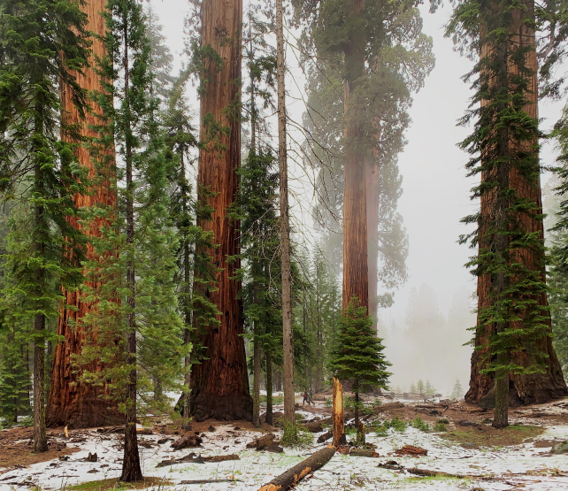

- Композиция
- Камера
- Поиск заказов
Фотография в природных условиях, уроки по композиции и по пользованию камерой.
Композиция
Вы изучите гармоничное размещение всех элементов изображения на снимке.
Изучите композицию интуитивную и какие-то определённые законы.